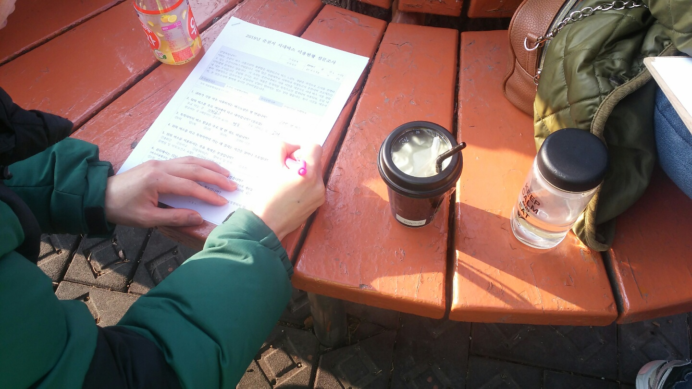
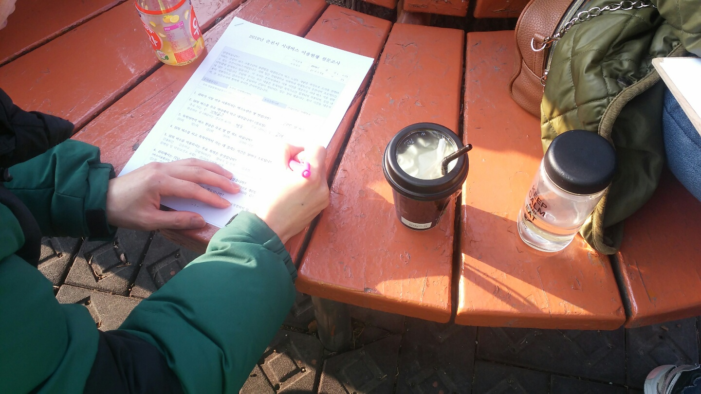

드디어 결전의 날이 찾아왔습니다. 바로 길거리 설문조사 나가는 날. 그전에 여러분들 양말 포장하시느라 고생 많으셨습니다. 덕분에 빠른 손놀림을 얻으셨군요. 농담입니다. 설문조사가 쉽지 않을겁니다. 추운 날씨에 거절하는 사람도 많을 겁니다. 하지만 우리는 달려야합니다.
춘천 시내 곳곳에 설문조사를 나갔군요. 시민버스커가 어디에서 운행중인지 살펴봅시다. 춘천역과 남춘천역, 강원대, 한림대, 춘천교대, 명동, 석사동 애막골 등등 정말 안가본 곳이 없을 정도군요. 하지만 여기서 멈추지 않았습니다. 각종 기관에도 찾아가보죠. 춘천 내 교회, 춘천청소년수련관, 춘천동부노인복지관, 춘천북부노인복지관, 춘천남부노인복지관, 여성가족인력개발센터, 여성가족연구원, 마더센터, 춘천 내 고등학교까지 아주 대단합니다.
그러나 우리는 여전히 부족합니다. 그 부족함을 채우기 위해 온라인 설문조사와 면접조사 즉, 인터뷰 조사도 나가게 됩니다. 온라인 설문조사 반응이 아주 뜨겁습니다. 인터뷰도 무사히 마쳤군요. 온라인 설문조사를 통해 길거리에서 만나기 어려운 주부 설문조사도 완료했습니다. 20대 성인과 노인, 청소년을 대상으로 한 인터뷰 조사 덕분에 설문조사로는 알 수 없는 심도있는 이야기도 잘 들었습니다.
우리는 설문조사를 통해 약 1200부의 설문결과지를 받았습니다. 정말 수고하셨습니다. 여러분은 이제 이 결과를 통계내고 분석할 일만 남았습니다. 조금만 더 힘냅시다.

 
